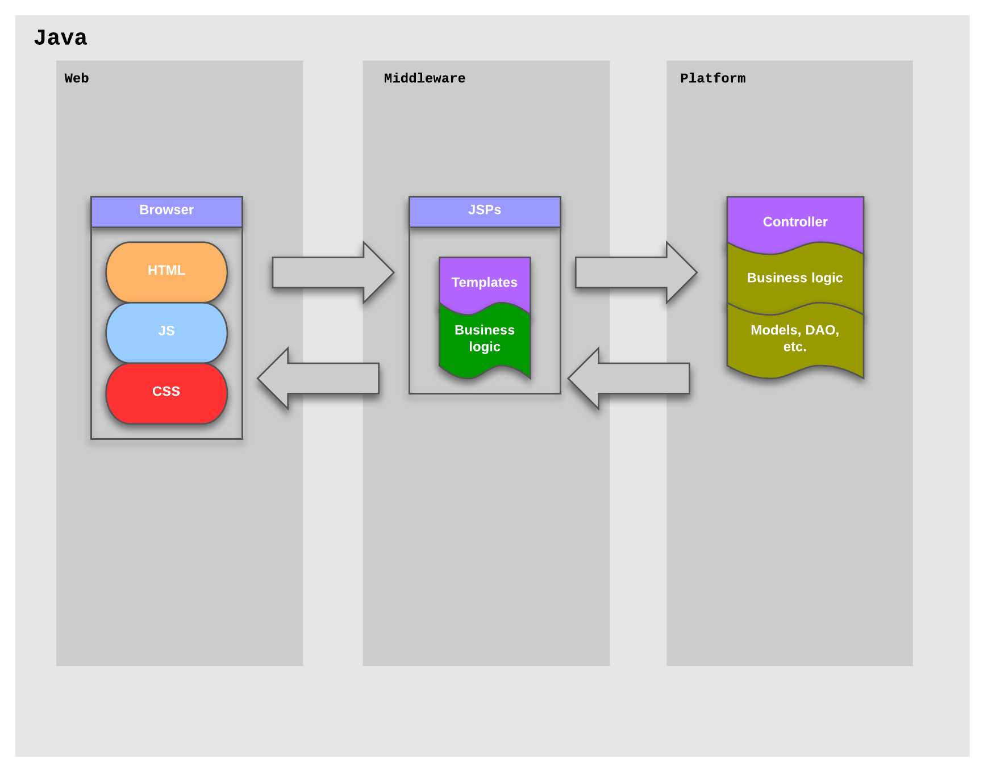
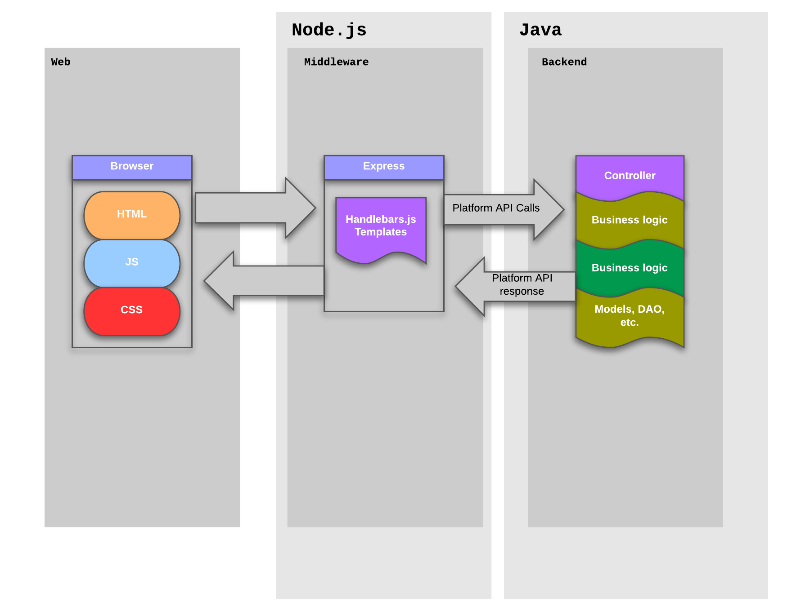

A Frontend Platform with
express
& Node.js

Web & Platform
developer roles
Web
To manipulate and visualise back-end data on the client-side (browser, mobile, etc.)
Platform
To write business logic and create clean APIs that can be consumed by client services
Platform Development
- No clean division between presentation and business-logic in the JSPs
- The same, slow environment when testing on the front-end
- Developers must, occasionally, write JavaScript / CSS / HTML
#1
To cleanly separate web development and platform concerns
#2
To end duplication of resources between front and back
#3
To speed web development through mocking & a faster environment
#4
To develop a plan to cleanly transition existing code
Goals
- #1 To cleanly separate web development and platform concerns
- #2 To end duplication of resources between front and back
- #3 To speed web development through mocking & a faster environment
- #4 To develop a plan to cleanly transition existing code
Proposition:
express
& Node.js
Environment
Existing
Java/Tomcat container with Maven for dependency management.
Takes around 90 seconds from server start to page load; page reloads are slow.
Proposed
A Node.JS/Express Frontend - so 100% JavaScript / CSS / HTML.
Takes around 15 seconds to launch; page loads are instantaneous.
Templates & Localization
Existing
JSP templates, containing a mix of presentation & business logic.
JS templates in the browser - some embedded in JSPs, some loaded via Ajax, others inlined in JavaScript.
Proposed
Handlebars.js templating on the client *and* the server for page layout & components.
So the same template is rendered everywhere
Bonus
Localization - The same localization is used for template rendering, and is available for client-side JavaScript use.
i.e. one localization resource, and no more JavaScript generation.
Mocks & Testing
Existing
Every call to the platform must fetch real data from some backend database. Represents the slowest part
of the existing stack.
So if, for example, the server room floods - web development cannot proceed :(
Proposed
Mocks, generated locally from the JSON component model, can respond with appropriate data in
place of a real server.
No database = an exponentially faster development environment.
Components
Existing
Monolithic pages that might contain many components & their dependencies
Proposed
Code organised by "component", each containing their own dependencies (CSS/JS) and routes.
More work to be done to clarify the best organisation for Viadeo front-end development.
Routes
Existing
Routes configured in the Java controller; requires intervention by the backend developer to establish
or modify a route
Proposed
The platform exposes an API rather than handling routing. Routes can be created in the middleware component.
Bonus
SEO & Accessibility - The same middleware route can respond to standard HTTP calls and Ajax requests
The site works with or without JavaScript
